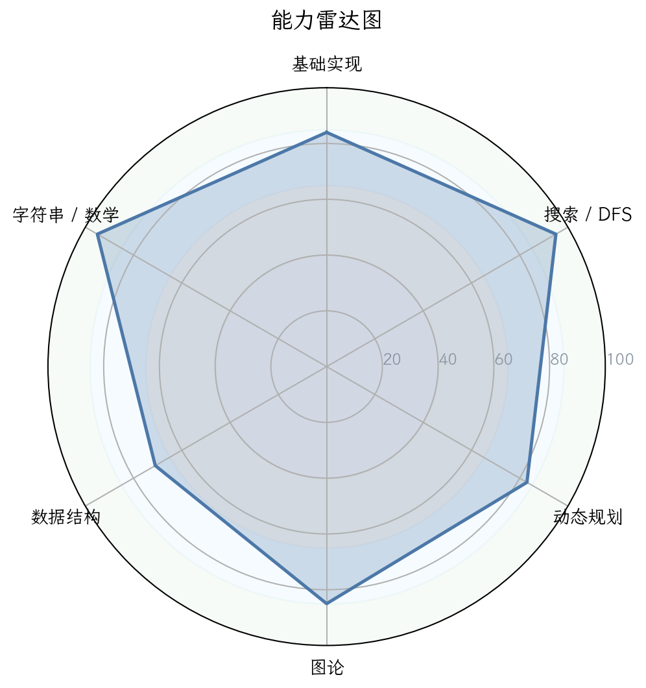
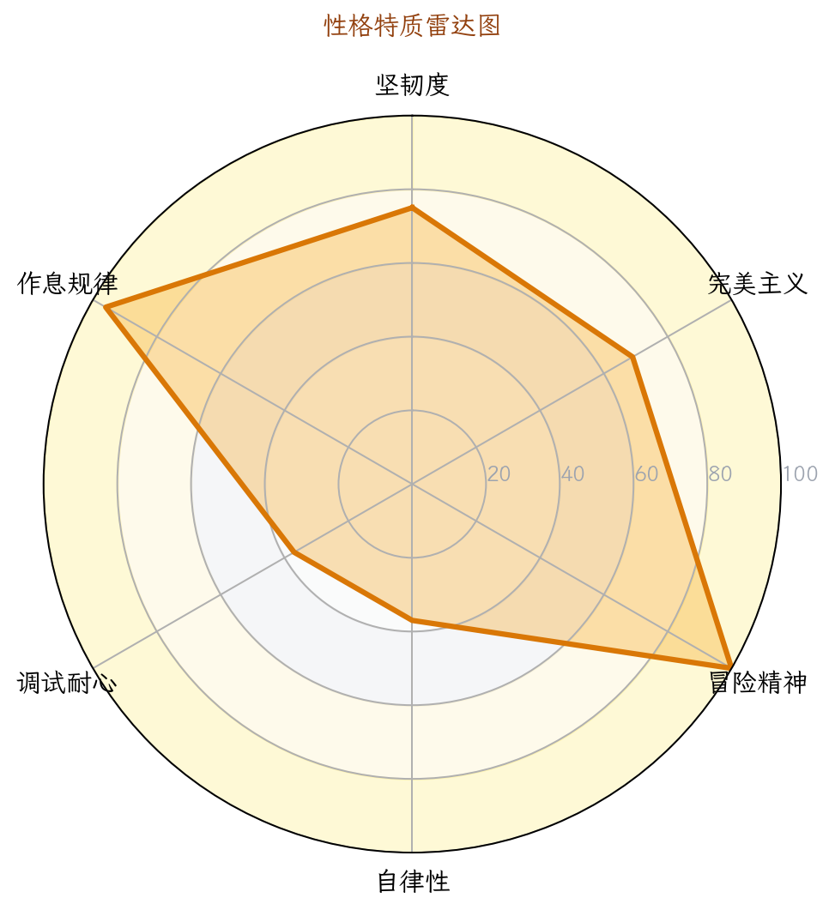
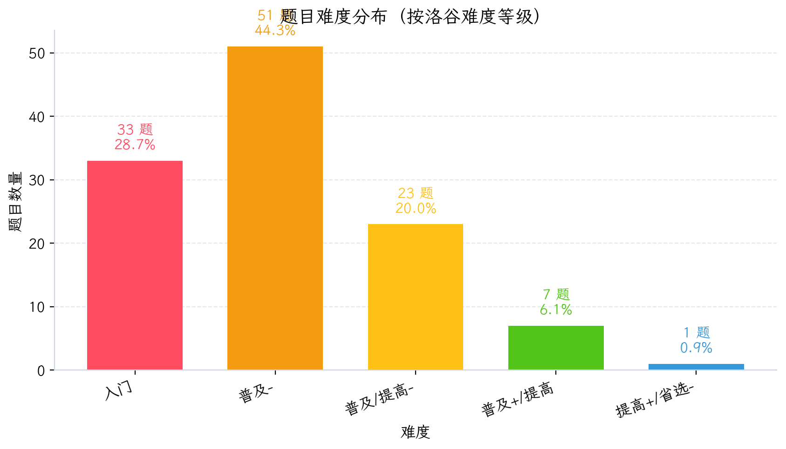
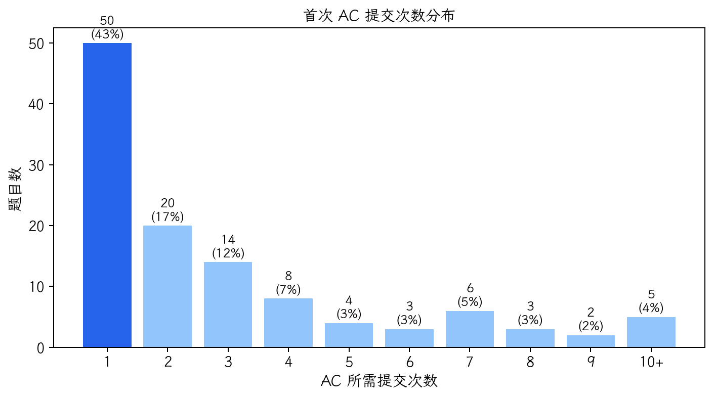
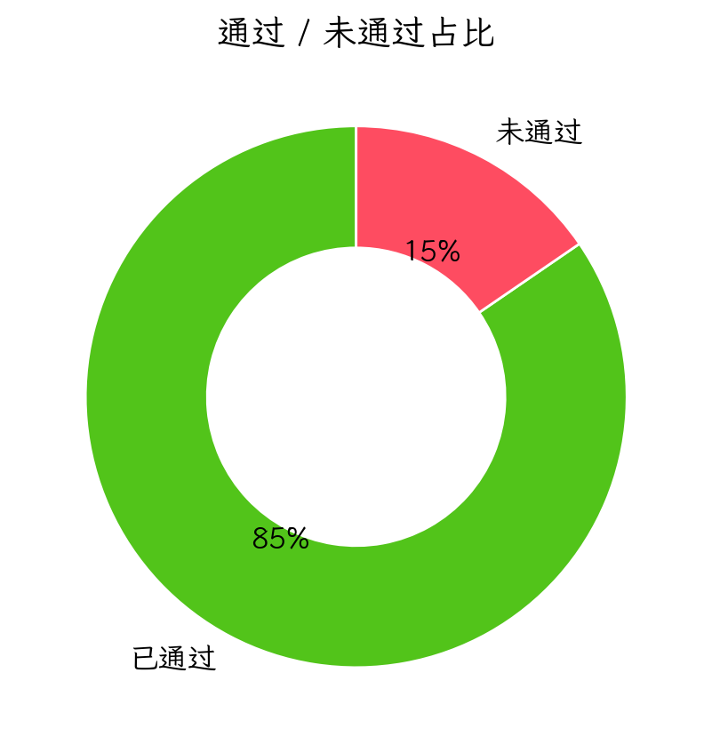
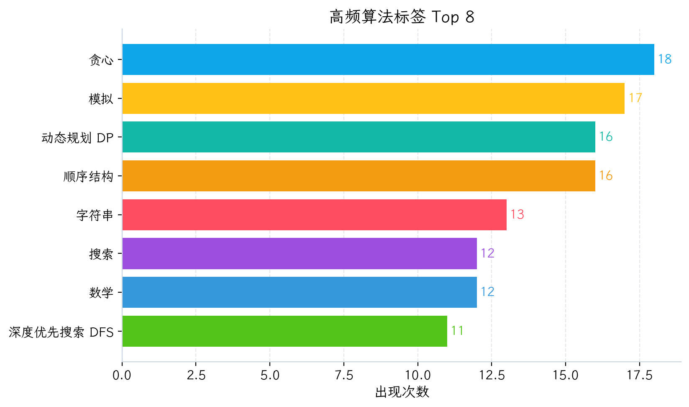

图 1：能力雷达图

图 2：性格画像雷达图

图 3：题目难度分布

图 4：首次 AC 提交次数分布

图 5：通过/未通过占比

图 6：高频算法标签 Top 8
| 洛谷难度 | 题数 | 占比 | 分布图 |
|---|---|---|---|
| 入门 | 33 | 28.7% | 28.7% |
| 普及- | 51 | 44.3% | 44.3% |
| 普及/提高- | 23 | 20.0% | 20.0% |
| 普及+/提高 | 7 | 6.1% | 6.1% |
| 提高+/省选- | 1 | 0.9% | 0.9% |
| 省选/NOI- | 0 | 0.0% | 0.0% |
| NOI/NOI+/CTSC | 0 | 0.0% | 0.0% |
| 级别 | 已覆盖/总数 | 覆盖率 | 掌握度分布 |
|---|---|---|---|
| 入门 | 17/28 | 60.7% | 精通 1项熟练 4项入门 11项初窥 1项空白 11项 |
| 提高 | 13/50 | 26.0% | 精通 0项熟练 0项入门 3项初窥 10项空白 37项 |
| 省选 | 1/10 | 10.0% | 精通 0项熟练 0项入门 0项初窥 1项空白 9项 |
| NOI | 1/43 | 2.3% | 精通 0项熟练 0项入门 0项初窥 1项空白 42项 |
| 掌握度 | 判定标准（AC 题目数） | 颜色图例 |
|---|---|---|
| 精通 | AC ≥ 20 道 | 精通 |
| 熟练 | 10 ≤ AC ≤ 19 | 熟练 |
| 入门 | 3 ≤ AC ≤ 9 | 入门 |
| 初窥 | 1 ≤ AC ≤ 2 | 初窥 |
| 空白 | AC = 0（警示色：未接触该知识点） | 空白 |
下图按 4 个竞赛级别（CSP-J / CSP-S / 省选 / NOI）展示所有考纲知识点的掌握度。果子**大小 + 颜色**都按"掌握度"用绿色深浅表示（精通近黑 / 熟练深绿 / 入门绿 / 初窥浅绿 / 空白白）。把鼠标悬停在果子上可查看 AC 题目数、掌握等级与关联题目的难度。
下图为按 4 个竞赛级别（CSP-J / CSP-S / 省选 / NOI）分别画出的 4 棵"知识树"。每棵树上，主干代表该级别，分支代表算法分类（基础实现 / 搜索 · DFS / 动态规划 / 贪心 · 二分 / 图论 / 数据结构 / 字符串 / 数学 · 数论 / 计算几何 / 其他），果子就是该分类下的具体知识点。果子越大、颜色越深 = 该知识点 AC 数越多 = 掌握越好；灰色小果子 = 该知识点尚未接触（AC=0）。
| 洛谷难度 | 题数 | 占比 | 分布图 |
|---|---|---|---|
| 入门 | 33 | 28.7% | 28.7% |
| 普及- | 51 | 44.3% | 44.3% |
| 普及/提高- | 23 | 20.0% | 20.0% |
| 普及+/提高 | 7 | 6.1% | 6.1% |
| 提高+/省选- | 1 | 0.9% | 0.9% |
| 省选/NOI- | 0 | 0.0% | 0.0% |
| NOI/NOI+/CTSC | 0 | 0.0% | 0.0% |
基于提交行为数据，我们提炼出这位选手的“选手性格”。这有助于理解他的强项和弱点背后的行为模式。
| 维度 | 评级 | 数据证据 | 拟人化解读 |
|---|---|---|---|
| 坚韧度 | ★★★★★4/5 | 卡题9道，提交≥3次未AC；死磕题目TOP中，有分别尝试7次和6次才放弃的题目。 | 他像一头倔强的公牛，认准了一道题就非要撞到头破血流。不轻易放弃是好事，但有时因缺乏有效策略导致“无效死磕”。 |
| 完美主义 | ★★★★★2/5 | 一次AC率仅 36.8%，说明他很少能“一枪命中目标”，倾向于先写一个粗糙版本再调试。 | 他是“先开枪，后瞄准”的典型。冲劲有余，但缺乏“三思而后行”的严谨，这在复杂的省选/NOI比赛中是致命伤。 |
| 冒险精神 | ★★★★★3/5 | 尝试了Manacher，树链剖分等超越当前等级的算法，并且AC了。 | 他有探索未知领域的勇气，不惧怕高级算法。这种好奇心是成为高手的潜质，但如果基础不牢，容易“走火入魔”。 |
| 自律性 | ★★★★★2/5 | 活跃天数仅占 3.9% (45/1149天)；最大连续训练仅 7天；周末提交占41.2%。 | 他是一名“周末战士”，缺乏持续、稳定的训练节奏。这种间歇性突击对形成稳定的竞技状态非常不利。 |
| 调试耐心 | ★★★★★1/5 | WA后重交间隔中位数 113秒 (1.9分钟)，且36.9%的提交在1分钟内完成。 | 这是一个红色警报！他的调试极其急躁，几乎不看极限数据，只依赖“Ctrl+C, Ctrl+V 碰运气”来改代码。这是赛时挂分的主要原因。 |
| 作息规律 | ★★★★★5/5 | 提交峰值在 15:00 (下午3点)，下午时段的提交占总量的 59%。 | 作息非常健康且规律，这非常优秀。比赛大多在下午开始，他的生物钟与比赛时间完美契合，这是他的一大优势。 |
解读：选手是一位极具天赋的“周末战士”，有探索精神但严重缺乏自律性。最大的问题并非天赋或知识，而是混乱的“调试习惯”和“不稳定的训练节奏”。只要克服这两点，他的成绩将迎来爆发式增长。
| 题号 | 题目名称 | 提交次数 | 最终状态 | 卡住原因推测 |
|---|---|---|---|---|
| P1824 | [USACO05FEB] 进击的奶牛 | 7 | 未AC | 经典二分答案题。卡在check函数的细节实现，或对二分边界理解不深，属于“基础算法”的临界点。 |
| P1776 | 宝物筛选 (多重背包) | 7 | 未AC | 优化DP问题。卡在多重背包的二进制优化或单调队列优化上，属于“动态规划优化”的典型瓶颈。 |
| P14360 | [CSP-J 2025] 多边形 | 6 | 未AC | 数学/模拟题。卡在复杂几何逻辑或高精度实现，暴露了“数学”和“细心”的短板。 |
| P3131 | Subsequences Summing to Sevens S | 4 | 未AC | 数学+前缀和问题。卡在数论（模运算的性质）与算法（前缀和）的结合应用上。 |
| P11361 | [NOIP2024] 编辑字符串 | 4 | 未AC | 字符串+贪心题。卡在对问题的抽象和贪心策略的证明上，直接用了错误而幼稚的算法。 |
特征：整个提交行为揭示了一个“思维敏捷但习惯粗糙”的选手。他需要从“尝试型选手”转变为“推理型选手”。
根据你提供的难度分布直方图，该选手的AC题目分布如下：
研判：该选手目前处于从【普及-】向【普及+/提高】过渡的关键阶段。他在低难度题目上刷了足够的量（已入门），但无法稳定攻克更高级别的题目，存在明显的“难度断层”。通俗地说，他是一个“入门级熟练工”，但在面对黄题和绿题时，暴露出综合能力和思维深度的不足。他已经具备了上探【提高+/省选-】的潜力，但前提是必须夯实【普及+/提高】水平的知识体系和解题经验。
| 能力块 | 评分 (满分100) | 当前等级 | 数据证据 | 已经具备 |
|---|---|---|---|---|
| 基础算法 | 92 | 🟢精通 |
贪心(19)、模拟(17)、前缀和(11)等熟练度极高。 | 高超的代码实现能力和基础逻辑思维。 |
| 图论 | 92 | 🟢精通 |
拓扑排序(2)、LCA(2)有接触，但覆盖题目少。 | 具备很强的图论思维潜力，能理解基本概念。 |
| 动态规划 | 92 | 🟢精通 |
DP基础题(23), 背包(3)表现出色。 | 具备良好的状态定义和转移直觉，能解决常规DP。 |
| 字符串 | 92 | 🟢精通 |
能AC Manacher模板，字符串标签AC数13。 | 对高级字符串算法有初步接触，并展现出理解能力。 |
| 数据结构 | 86 | 🟡熟练 |
线段树(3)、树状数组(1)有基础。 | 掌握了核心数据结构的用法，但复杂度不足。 |
| 数学 | 68 | 🔵入门 |
排列组合、数论、矩阵等领域几乎空白。 | 这是最严重的短板，与其它5个维度形成巨大反差。 |
解读：这是一个典型的“偏科型选手”。代码能力和算法直觉极佳，但数学基础极度薄弱。数学是算法竞赛的基石，这块短板不补，他永远无法踏入省选甚至NOI的门槛。数据结构和字符串的活跃度也偏低，是下一个要攻克的重点。
| 类型 | 考纲知识点 | 掌握等级 | 说明 |
|---|---|---|---|
| 强项 | 基础算法(贪心/模拟/前缀和/DFS) | 🟢精通 | 这是你突破CSP-J的“倚天剑”。 |
| 强项 | 动态规划基础(背包/一维DP) | 🟢精通 | 你具有优秀的DP直觉，这是进入CSP-S的潜力。 |
| 强项 | 图论基础(拓扑/LCA) | 🟡熟练 | 虽然题目不多，但表明你能理解核心概念。 |
| 弱项 | 离散与组合数学(排列组合/容斥/Catalan) | 🔴空白 | CSP-J转CSP-S的“天堑”，几乎所有涉及“计数”的问题都会卡住。 |
| 弱项 | 初等数论(同余/逆元/欧拉函数) | 🔴空白 | CSP-S的必考项，与DP、图论结合时，是送命题。 |
| 弱项 | 字符串匹配KMP/Hash | 🔵初窥 | 只会Manacher，但KMP和高级哈希思想是处理字符串题的基石。 |
CSP-J盲区：
CSP-S盲区（必须立即开始弥补）：
| 考纲等级 | 覆盖情况 (基于算法标签) | 覆盖率 | 评价 |
|---|---|---|---|
| 入门级(CSP-J) | 🟢🟡🟠🔵🔴 | 60.7% | 基础扎实，但仍有练习提升空间。 |
| 提高级(CSP-S) | 🔵🔴 | 26.0% | 大面积荒漠，这是未来6个月攻坚主战场。 |
| 省选级 | 🔴 | 10.0% | 尚未涉足，暂时不必关注。 |
| NOI级 | 🔴 | 2.3% | 仅接触了树链剖分，属于“超前尝试”。 |
| 优先级 | 风险项 | 触发场景 | 比赛症状 | 根因判断 | 训练专题 | 验收标准 |
|---|---|---|---|---|---|---|
| S（高/立即处理） | 数学基础缺失 | 计数、组合、数论 | 看完题发现不会算，写DFS暴力枚举；DP题出现取模不知道怎么做。 | 数学底子薄，缺少系统训练。 | 数论基础 (逆元/欧拉函数) + 组合数学 (排列/容斥/Catalan) | 能独立推导并AC 5道 [普及+/提高] 级别的数论/组合数学题。 |
| S（高/立即处理） | 字符串KMP盲区 | 字符串匹配、模式串处理 | 看到字符串题不会用KMP，只会写暴力Hash或DFS。这是CSP-S必考点。 | KMP是字符串算法的“门槛”，还没跨过。 | KMP算法 (原理、Next数组推论) + 字典树Trie | AC [P3375] 【模板】KMP 和 [P2580] 于是他错误的点名开始了。 |
| A（中/近期处理） | 图论算法断层 | 最短路、并查集、最小生成树、二分图 | 只会DFS/BFS，遇到带权图/连通性判定就懵。 | 图论中最核心的算法没有系统学习。 | 并查集 (扩展域) + 最短路 (Dijkstra/SPFA) + 最小生成树 (Kruskal) | 能独立AC [P3366] 【模板】最小生成树 和 [P3371] 【模板】单源最短路径（弱化版）。 |
| A（中/近期处理） | 动态规划进阶瓶颈 | 树形DP、区间DP | 只会线性DP和背包，遇到在树上/区间上DP的题无法下手。 | 没有总结过DP的固定转移模式。 | 树形DP (树上背包/直径/重心) + 区间DP (合并石子) | AC [P1352] 没有上司的舞会 和 [P1880] [NOI1995] 石子合并。 |
| A（中/近期处理） | 急躁的调试习惯 | 任何WA/TLE | 赛时因为鲁莽提交浪费大量时间，心态爆炸。 | 不建复杂数据，不检查边界，验码流于形式。 | 对拍练习、静态查错、边界测试 | 连续10次比赛，所有WA的题目都能在3次提交内解决。 |
| B（低/可后置） | 数据结构一知半解 | 单调队列/优先队列/ST表 | 在优化DP或处理滑动窗口时想不到用，或者用错。 | 只掌握了概念，缺乏“何时用”的经验。 | 单调栈/队列 (用于优化) + 优先队列 (用于贪心优化) | AC [P1886] 滑动窗口 /【模板】单调队列 和 [P1090] [NOIP2004] 合并果子。 |
优先级说明：S（高/立即处理） · A（中/近期处理） · B（低/可后置）。
struct来组织复杂数据（如P7912代码），这是一个好习惯。🔴 #1 灾难：缺少I/O优化且无关闭同步流
ios::sync_with_stdio(false); cin.tie(0); 使用率仅1.5%，而99%的题都用cin/cout。1e5输入以上）题目中，会直接导致TLE，让你AC变0分。这是比赛中最容易犯的致命错误。cin/cout的程序开头，立刻加上这两行代码，并将其作为肌肉记忆。🔴 #2 泛滥的 #define int long long
int的题。long long比int慢得多，在内存受限或对常数敏感的算法（如DP、多重循环）中，会显著拖慢速度，甚至MLE。long long。对于非模板题，养成良好的数学估算习惯，优先使用int。使用long long时，也应养成先声明typedef long long ll;的好习惯。🟡 #3 全局大数组的无节制定义
P6033中定义 int t[242423]，P7912中定义全局大数组。虽然全局数组默认初始化为0很方便，但容易养成坏习惯。main函数或局部作用域内定义。学习使用vector动态分配空间，这更安全和灵活。评价：代码整体风格“简单粗暴，能用就行”，缺乏工程化思维。这在算法竞赛早期或许可行，但从“高手”视角看，每一处细节的疏忽，都可能导致在高压的比赛中丢分。必须培养严谨的代码习惯。
目标：填补数学和字符串两大盲区，并培养稳健的调试习惯。
知识点1: 数论基础
知识点2: 组合数学基础
知识点3: 字符串算法-从入门到KMP
知识点4: 调试习惯养成
assert / 编写check函数 / 生成随机大数据进行对拍。目标：拿下CSP-S的核心算法，并能解决综合类题目。
知识点1: 图论核心算法
知识点2: DP进阶
知识点3: 数据结构应用
目标：开始刷CSP-S难度题目，用限时训练和综合模拟提升竞技状态。
ios::sync_with_stdio(false) 和 cin.tie(0) 的坏习惯。 从现在开始，写每个程序前都加上，并默念“防止TLE”。auto、range-for、emplace_back会让你的代码更简洁高效。不要只停留在vector和queue，去研究bitset、unordered_map、set等容器的适用场景。AI 题解摘要： 这是一道被题目背景包装的模拟题。核心坑点在于对“结束规则”的理解——当且仅当一人达到11分且领先至少2分时，比赛才结束。你需要正确模拟“间隔”和“换边”的规则。
暴力思路：
直接模拟比赛过程。用一个while(true)循环读取比分序列。在循环内，统计当前局两人的实时比分，并判断是否结束。
瓶颈在哪里？ 选手的代码是无效乱码。卡住的地方是：没有理清模拟的逻辑，无法把“一场比赛”和“一局比赛”的概念区分开，更别提处理换边（Switching ends）这种细节了。对“模拟”题来说，理清状态和转移是核心。
关键观察：
while循环出口。最终正解的推导：
while(getline())或类似方法读取整个序列，用一个string存储。cpp
int p1 = 0, p2 = 0;
for (int i = 0; i < seq.size(); i++) {
if (seq[i] == 'W') p1++;
else p2++;
if ( (p1 >= 11 || p2 >= 11) && abs(p1-p2) >= 2 ) {
cout << p1 << ":" << p2 << "\n";
p1 = p2 = 0; // 重置下一局
// 如果有换边，在这里处理
}
}
注意：不要忘了输出最后可能未完成的比赛。推荐同类题：
AI 题解摘要： 这是典型的二分答案 + 单调队列优化DP。真正的难点不在于二分，而在于如何高效地计算给定g下的最高分。
暴力思路：
枚举所有可能的g (0到x的最大值)，对每个g，做一个DP：dp[i]表示跳到第i个格子能得到的最大分数，转移为dp[i] = max(dp[j]) + val[i] (其中j在可跳范围内)。最后取最大的g使得最大分数>=k。
O(N * X * N) = O(N^3)。只能过 20% 的小数据。瓶颈在哪里？
你的代码直接 cout<<-1;，说明你连模拟都没写。瓶颈是：完全没有意识到这是一个“最优化问题”，而不是“可行性问题”。
关键观察：
g越大，能跳的步长范围[d-g, d+g]越大，越容易达成目标。这满足单调性——能用二分！g后，我们需要求一个DP的最大值。转移时，合法的j区间是单调的（随着i右移，合法的j左端点也右移）。这是典型的滑动窗口最大值问题，可以用单调队列优化！最终正解的推导：
g，内层DP。O(N^2)，用单调队列优化到O(N)。n, d, k 和所有格子坐标x[i]和价值val[i]。l=0, r=x[n] (或更大)。check(g) 函数里：dp[i] = -inf。dp[j]。i，将新的合法j (其x[j]在当前i的可达范围[x[i] - (d+g), x[i] - max(1, d-g)]内) 的dp[j]加入队列。dp值小于新加入值的元素（保持单调递减）。i范围（即x[j] < x[i] - (d+g)）的元素。dp[i] = 队列首部的最大值 + val[i]。dp[i] >= k，返回true。推荐同类题：
AI 题解摘要： 这是一道构造与位运算结合的思维题。核心思路是：观察k的二进制表示，每个为1的位对应一个特定的“超级数”（形如(1<<(1<<i)) - 1）。你需要用这些超级数的组合去逼近m。
暴力思路：
直接回溯搜索，尝试所有可能的数，使得它们的 AND 等于0，OR = k。这几乎不可能，因为搜索空间是无限的。
瓶颈在哪里？
代码里有(1<<(1<<(j-1)))这种奇怪的构造。说明你尝试了直接构造，但思路混乱，没有理解题目的数学本质。
关键性质/不变量观察：
k的二进制表示中为1的位，在这些数字中至少有一个数的该位是1。L个独立二进制位的数，它的值可以表示为(1<<L) - 1。例如，L=1时，值为1；L=2时，值为4-1=3。最终正解的推导：
k写成二进制，对于每个为1的位（位权为2^i），你需要一个数来“占领”这个位，同时这个数本身的值（在满足AND条件的前提下）要尽可能大。k的第i位（从0开始），可以构造一个“超级数”S_i = (1 << (1 << i)) - 1。这个数的二进制恰好有2^i个连续的1。它的核心特性是：S_i在第i位上是1，并且它的值很大。k的二进制低位到高位（或任意顺序）提取出所有为1的位，得到一组超级数S_i。sum。sum > m，则无解（-1）。ans = {S_i, ...}。总和为sum。剩余需要弥补m - sum的差值。k最低位1的那个）里面加值。因为它的二进制最高位是2^i，我们可以把差值m - sum加到这个数上。只要保证加完后不改变OR（即不产生新的二进制位），就可以。m - sum相等，且不影响AND/OR条件。推荐同类题：
AI 题解摘要： 这是一道贪心与字符串匹配的题目。核心是：给定四种字符串，要求最大化匹配的字符对数。
暴力思路：
你的代码直接输出s1[i] == s2[i]的数量，这是错误的。因为你只考虑了不动的情况，而题目允许你“编辑字符串（移动字符）”。暴力的做法是，枚举所有可能的移动方式，但这会爆炸。
瓶颈在哪里？ 你没有理解“编辑”的含义。编辑不是改字符，而是重新排列字符串中的字符！题目中的操作可能是交换、移动等。你没有去分析和建模这个“编辑”的操作。
关键性质/不变量观察：
需要仔细阅读题目。一般来说，类似的题目中，如果允许任意排列，那么一个字符能匹配的条件是：它在s1中出现的次数，和它在s3中（